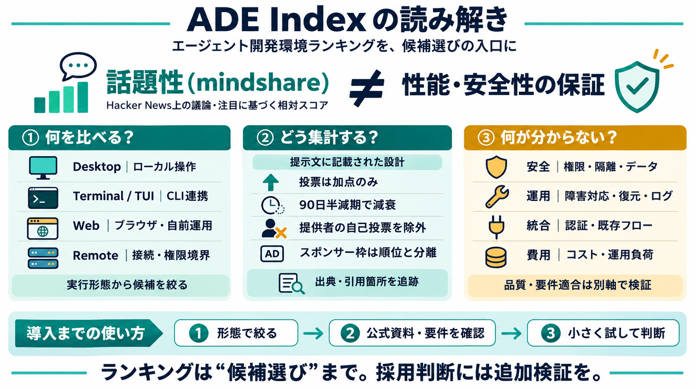

Best ADE for 2026: top 7 agentic development environments
## 7. Herdr What it is. A native app for running coding agents on your machine and on others over SSH, built on herdr-c…

ADE Index（エージェント開発環境ランキングサイト）の仕組みと、上位カテゴリで示される“道具の候補”を、話題性（mindshare）前提で圧縮して理解します。
※本資料は「性能断定」ではなく、提示文のスコア設計と限界を読み替えるための要約です。 / Japanese gloss: エージェント開発環境（agent workspaces）
ADE Indexの上位は「技術的に最良」を保証しません。特定期間のHacker News上の議論量に基づく相対スコア（mindshare）として解釈するのが前提です。
Hacker Newsの注目・議論（投票/コメント等）
性能・安全性・運用適合は別途要評価
ADE Indexは、エージェント開発環境（Desktop/Terminal/Web/Remote等）をカテゴリ別に集計し、議論量中心の指数でランキングします。
Desktop apps（デスクトップ）
Terminal & TUI（端末UI）
Web & self-hosted / Remote
提示文では、ランキングの信頼性を高めるためのルール（投票の扱い、減衰、自己投票排除、出典追跡）が示されています。
投票は“上げるだけ” / 90日半減期で減衰
Maker（提供者）自己投票はカウントしない
スポンサー枠は通常の順位リストに混ざらず、ラベル付けされて区別されます。したがって「広告の影響込みの順位」とは切り分けて読む必要があります。
mindshareベースの相対スコア
ラベル表示 / 通常順位に混入しない
事実（facts）には出典があり、引用箇所を追跡できます。誤情報があれば訂正ログや報告で扱える設計が述べられています。
factsにsources（出典）
引用箇所を辿れる
Desktop / Terminal(TUI) / Web(self-hosted) / Remote に分けることで、接続形態・権限境界・運用の前提を比較しやすくしています。
ローカル常駐・操作性
CLI中心・作業フロー統合
接続・権限・境界が別物
ランキングは話題・認知の相対度を示し、品質（安全性、安定性、UX、性能、コスト、監査性）そのものは保証しません。導入可否は追加調査が必要です。
セキュリティ境界・権限モデル・ログ粒度
コスト/運用負荷/障害時挙動/要件適合
ADE Indexは候補を絞る入口として有用です。最終判断は、公式ドキュメント、セキュリティ/データ取り扱い、ライセンス、サンプル運用で固めます。
欲しい形（Desktop/Terminal/Web/Remote）で絞る
要件（認証/監査/権限分離/ネットワーク境界）を確認
ランキングに頼りきらないために、次の観点を別軸で点検します（安全・運用・統合・コスト）。
権限/隔離/データ取り扱い/監査ログ
障害耐性・復元・継続運用・学習コスト
既存開発フロー・認証連携・ネットワーク要件
透明性（出典追跡、スポンサー分離、自己投票排除、減衰）を評価できる一方、体験や組織要件の裏付けは不足しています。最終判断には追加調査が必須です。
話題性の可視化＋一定の説明責任
性能/安全/運用適合の保証は別途
提示文に加え、Web検索・過去履歴で確認できた周辺情報はあるものの、ADE Indexの採点方式（vote decay等）を同一根拠で裏取りできたわけではありません。
## 7. Herdr What it is. A native app for running coding agents on your machine and on others over SSH, built on herdr-c…
Most coding benchmarks test models inside one fixed harness, so they can’t tell you anything about Claude Code versus Co…
| Metric | GPT-6.2 Astra (Max) | DeepSeek V4.1 Flash 1017 (Max) | Analysis | ------| | Agent Harness | Codex | DeepSeek …
Vendor-reported benchmarks: DeepSeek’s model card reports 31.2 on Terminal-Bench 4.0, 74.2 on DeepSWE v1.1 and 90.6 on T…
THE NEURAL FEED AI INTELLIGENCE • DAILY INSIGHTS Back to Feed Viral Wire # DeepSeek releases Harness v0.1, an open-so…